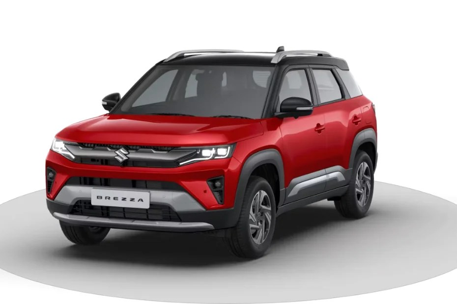
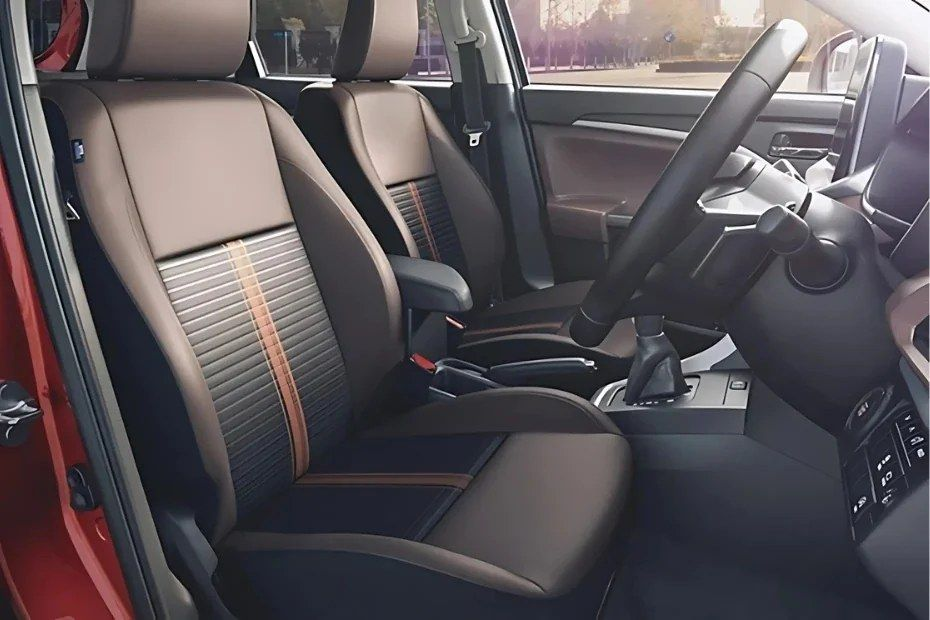
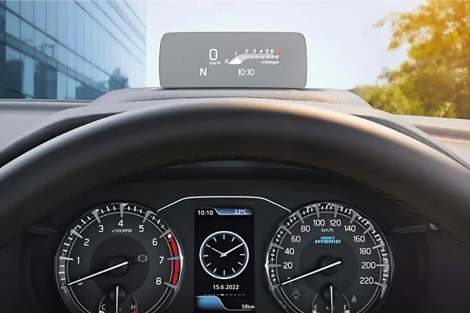
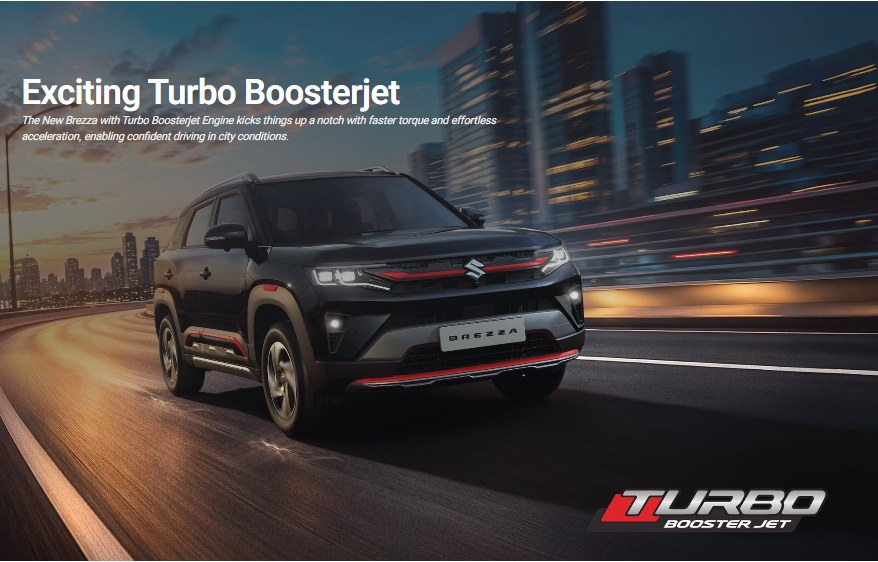
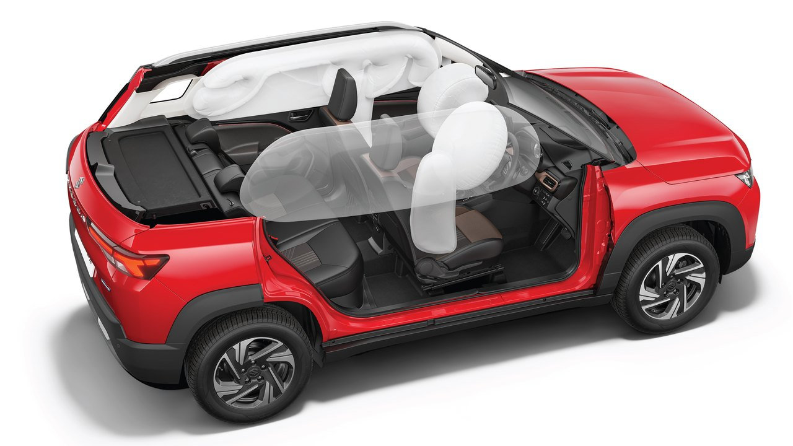
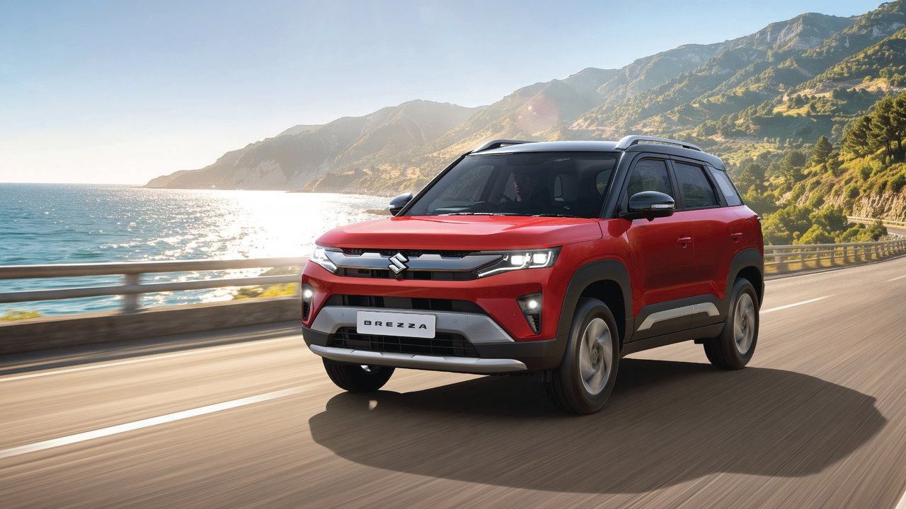

2026 Brezza vs Tata Nexon: Which to Buy?
By Gagan Mishra

The 2026 Brezza adds a 1.0-litre turbo-petrol to the 1.5-litre petrol and CNG, along with new features and a five-star Bharat NCAP rating. The real question is no longer whether to buy a Brezza, but which engine.
This review uses Maruti Suzuki’s published specifications, the Bharat NCAP report, current listed prices and Autocar India’s drive, not our own test, plus early owner reports from Team-BHP and CarWale. Prices and specifications were checked on 23 November 2026. See our Review Methodology for how we separate editorial assessment from measured testing.
The Brezza doesn’t win on any single headline feature. It wins by combining a roomy cabin, very good efficiency, a choice of three powertrains and a real torque-converter automatic in a well-built package. The 1.0 turbo manual is the value pick, and the 1.5 automatic is the one for city traffic. Note that the five-star crash rating does not cover the CNG versions.
| Trim | Ex-Showroom Price |
|---|---|
| LXi | ₹7.55 – 9.45 lakh |
| VXi | ₹8.70 – 10.61 lakh |
| ZXi | ₹9.99 – 12.06 lakh |
| ZXi+ | ₹11.31 – 13.76 lakh |
The new 1.0 turbo is offered on all four trims and costs less than the equivalent 1.5. In the same trim, the 1.5 automatic costs ₹1.91 lakh more than the 1.0 turbo manual on the VXi and ZXi, and ₹2.29 lakh more on the ZXi+. The 1.5 manual, 1.5 automatic and CNG each skip one trim. Our picks: VXi for value, ZXi as the all-rounder, the ZXi 1.5 AT for city driving, CNG for high mileage and the turbo manual for performance. Our Brezza Variants Explained guide maps every engine and trim.
This is a facelift, not a redesign. The front gets revised grille trim, a cleaner bumper and new triangular fog-lamp housings, and there are new 16-inch alloys. Turbo versions add red accents on the grille, bumpers, side skirts and wheel arches, which Autocar India found more like add-on accessories than a proper sporty kit. The upright, boxy shape and sub-four-metre length carry over unchanged.

The cabin layout carries over, now trimmed in bronze and black with 64-colour ambient lighting on top versions. Autocar India rates the Brezza one of the few compact SUVs that can seat three adults across the rear in comfort, with firm but accommodating seats and an understated, hard-wearing build.
The boot holds 328 litres, and its square shape makes it more useful than the figure suggests. CNG versions now carry their tank under the floor, so they keep the full boot. The catch: no Brezza now comes with a spare tyre, only a puncture repair kit and inflator.

Six airbags, ESP and hill-hold assist are standard. Top trims get a new 10.1-inch touchscreen with wireless Android Auto and Apple CarPlay, a head-up display, ventilated front seats, a ventilated wireless charger and an electric sunroof. New front parking sensors enable blind-spot warning and rear cross-traffic alert, but there is no full driver-assistance suite. Autocar India notes that powered seats, rear blinds and a panoramic sunroof, offered by some rivals, are missing. The instruments are still analogue dials.

The new 1.0-litre Boosterjet turbo-petrol has a 48-volt mild-hybrid system and comes only with a six-speed manual. For an automatic, you need the 1.5-litre petrol, which uses a proper six-speed torque converter rather than an AMT.
| Engine | Power / Torque | Transmission Options |
|---|---|---|
| 1.0L Boosterjet Turbo-Petrol (mild hybrid) | 110 PS / 170 Nm | 6-speed Manual |
| 1.5L K15C Petrol | 103 PS / 139 Nm | 6-speed Manual, 6-speed Automatic (torque converter) |
| 1.5L S-CNG | 87.8 PS / 121.5 Nm (on CNG) | 6-speed Manual |
Autocar India found the turbo smooth and very tractable, with a light clutch and slick gearbox, but short of outright punch, with a few flat spots. Its long-term test car showed almost no turbo lag. The 1.5 remains the relaxed, easy choice, especially with the automatic.
| Engine / Gearbox | ARAI Claim |
|---|---|
| 1.0 Turbo Manual | 19.96 – 20.47 kmpl (by trim) |
| 1.5 Petrol Manual | 20.81 – 21.09 kmpl (by trim) |
| 1.5 Petrol Automatic | 20.17 kmpl |
| 1.5 S-CNG | 26.90 km/kg |
The turbo’s claims are only slightly below the 1.5’s, and Autocar India’s car showed 11–14 km/l on its trip computer during a day of hard driving. That is strong for a turbo-petrol. Our real-world mileage guide covers city and highway figures in more detail.

This section draws on the published Bharat NCAP report and Autocar India’s drive, not our own, in line with our Review Methodology. Bharat NCAP gave the Brezza five stars, with 30.41 out of 32 for adult protection and 43 out of 49 for child protection. The frontal offset test scored 14.41 out of 16 and the side barrier test a full 16. The tested car was a ZXi+ 1.5 automatic. Bharat NCAP marks the rating as applying to select variants only: its list covers the 1.5 petrol manual, 1.5 automatic and 1.0 turbo versions, but not the CNG Brezza. If you are buying CNG, the five-star rating does not officially apply to your car.
On the road, Autocar India found the steering now self-centres properly. The tall body feels top-heavy in corners and is sensitive to crosswinds, and the ride is on the brittle side, though never uncomfortable.

The facelifted Brezza went on sale in July 2026, so owner reports are still early and most cover less than 1,500 km. On 23 November 2026 we read the owner posts in Team-BHP’s Brezza review thread and the owner reviews on CarWale. We left out test drives, posts about the older model and reviews from people who had not driven the car. These are owners’ experiences, not measured results, and we say how many owners each point rests on.
So far, owners back our view of the Brezza as comfortable and easy to drive, and of the turbo as good value. We found no owner reports yet on long-term reliability or service costs. We will update this section as owners cover more distance.
Following our Review Methodology, we rate eight criteria on paper, using official specifications, prices and published test evidence rather than our own driving, then average them into a Spec Score.
| Criteria | Score |
|---|---|
| Design | 8.0 / 10 |
| Performance | 8.0 / 10 |
| Mileage Potential | 8.5 / 10 |
| Comfort | 8.0 / 10 |
| Features | 8.0 / 10 |
| Safety | 9.0 / 10 |
| Practicality | 8.5 / 10 |
| Value for Money | 8.5 / 10 |
| Spec Score (average) | 8.3 / 10 |
Design: Mature and upright; the facelift changes are mild, and the turbo’s red trim divides opinion.
Performance: A smooth, tractable new turbo and a relaxed 1.5 with a real automatic.
Mileage Potential: Strong claims across petrol, turbo and CNG, and promising early turbo figures.
Comfort: Room for three across the rear; a slightly brittle ride.
Features: Ventilated seats, HUD, a 360-degree camera and a 10.1-inch screen on the ZXi+, but no ADAS or digital cluster.
Safety: Five stars from Bharat NCAP for the petrol and turbo versions; CNG is not covered.
Practicality: A useful square boot that CNG no longer eats into, but no spare tyre.
Value for Money: The turbo undercuts the 1.5 on price, and the range is keenly priced.
The Brezza remains the sensible, well-rounded choice in its class, and the facelift makes it better without changing its character. The 1.0 turbo is the best value and the most enjoyable to drive. The 1.5 automatic is the easiest in traffic, and CNG is cheapest to run but sits outside the five-star rating. Early owner reports back this up, praising the comfort on long drives and the turbo’s ease in traffic. Before you buy, decide whether you can live without a spare tyre: owners name that as the main drawback too.

What is the price of the 2026 Maruti Brezza?
CarDekho lists the Brezza from ₹7.55 lakh to ₹13.76 lakh, ex-showroom, on 23 November 2026, after a price rise of up to ₹5,000.
Does the Brezza turbo come with an automatic?
No. The 1.0 turbo is manual-only. The automatic is available only with the 1.5-litre petrol.
What is the Brezza’s Bharat NCAP rating?
Five stars, with 30.41 out of 32 for adults and 43 out of 49 for children. Bharat NCAP applies it to the petrol and turbo versions; CNG variants are not on its list.
What mileage does the Brezza give?
ARAI claims are 19.96–20.47 kmpl for the turbo, 20.81–21.09 kmpl for the 1.5 manual, 20.17 kmpl for the automatic and 26.90 km/kg for CNG.
Does the CNG Brezza lose boot space?
No. The CNG tank now sits under the floor, so the 328-litre boot is kept. As a result, no Brezza has a spare tyre.
Does the Brezza have six airbags?
Yes. Six airbags, ESP and hill-hold assist are standard across the range.
What do Brezza owners say about it?
Early owners mostly praise the comfort on long drives, and turbo owners on Team-BHP find the engine easy in traffic, reporting about 12–13 km/l in the city and about 20 km/l on the highway. The missing spare wheel is the most common complaint. Most owners have driven under 1,500 km so far.
Owner discussions
Links checked 23 November 2026. Prices updated 23 November 2026. Driving impressions are from Autocar India, as named in the text. We have not driven this car. Owner reports were read on 23 November 2026; we do not show usernames.
By Gagan Mishra

By Gagan Mishra

By Gagan Mishra